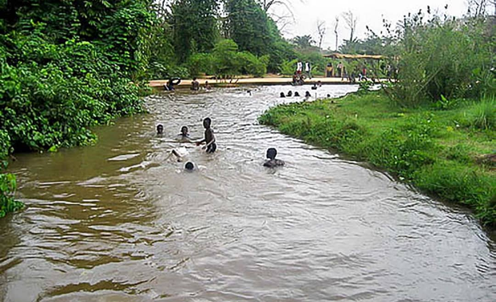

La Guinguette
Description et Historique: Située à proximité de l’Université Nazi Boni de Nasso, à 15km de Bobo Dioulasso, la Guinguette est un site avec une rivière au milieu d’une végétation luxuriante. Connue de tous les habitants de Bobo et des touristes, la Guinguette doit son nom au premier classement de la forêt de Kou en 1942. Lieu de repos des soldats français, elle fut nommée ainsi en référence aux petits établissements très prisés des parisiens et situés sur les bords de la Seine et de la Marne. la guinguette est un endroit de detente naturel situer a BOBO-DIOULASSA au Burkina-Faso.Elle est ideal pour les promenade,piques-niques en famille.